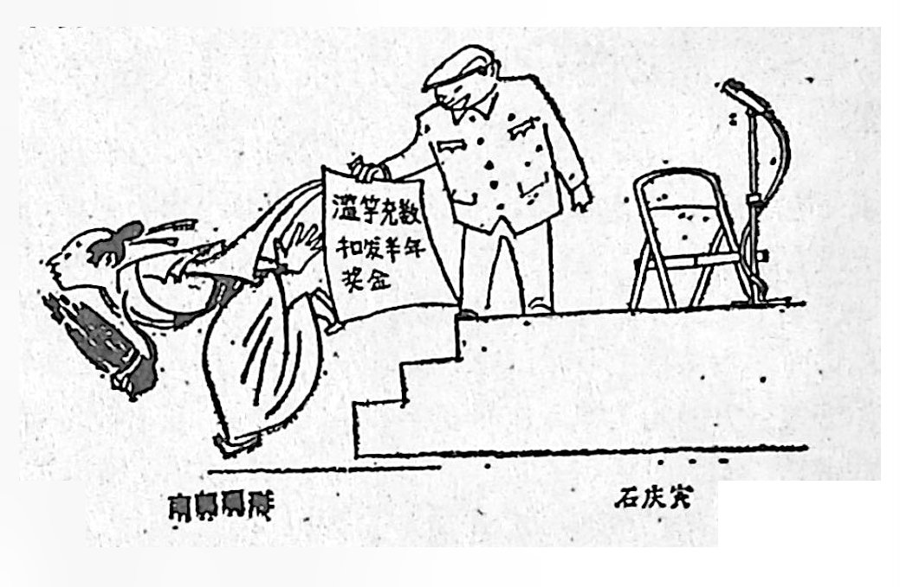

石庆宾 《人事》1987年第2期（总第17期），第43页
南郭现形
Mr Nanguo Exposed
- Text in the drawing
- 滥竽充数 扣发半年奖金
Making up the numbers in the ensemble — half a year's bonus withheld - Description
- Mr Nanguo, in ancient robes, tumbles down the steps from a stage with an empty chair and music stand, while an official holds up a notice: for faking his place in the band, half a year's bonus withheld.
- Note
- 滥竽充数, “passing oneself off as a yu player to fill out the numbers,” is the fable of Mr Nanguo, who hid in a royal ensemble of three hundred until the new king asked for solos.
- Artist
- Shi Qingbin 石庆宾
- Published in
- 《人事》1987年第2期（总第17期）, p. 43
- Themes
- Fable, legend and history · Reform and its implementation

Cite
Shi Qingbin, “南郭现形” [Mr Nanguo Exposed], Renshi (Personnel) 《人事》, 1987, no. 2, p. 43.